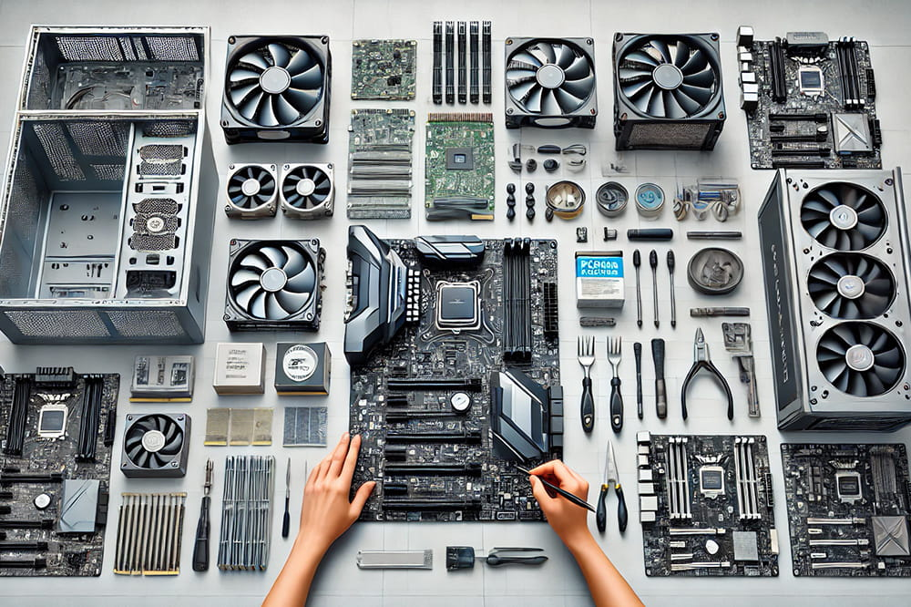
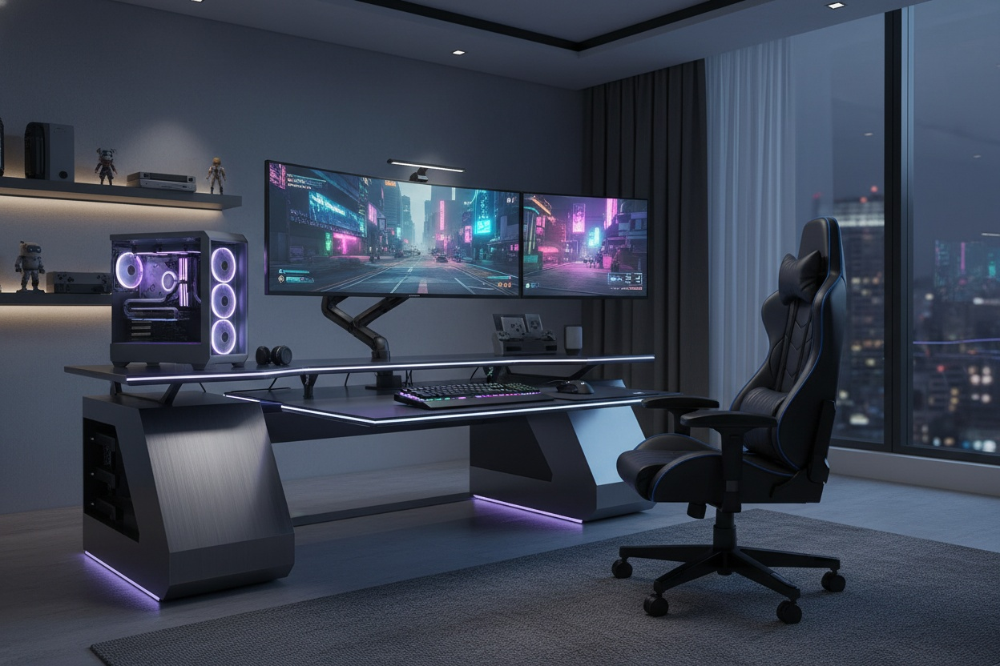

Guia para construir tu primer PC Gaming
Aprende los pasos esenciales para montar tu propio ordenador gaming sin complicaciones, evitando errores comunes y entendiendo cada decision importante.
Guias, reviews y consejos
Busca ideas rapidas, compara recomendaciones y encuentra articulos pensados para comprar hardware con mas criterio y menos ruido.
Seleccion editorial

Aprende los pasos esenciales para montar tu propio ordenador gaming sin complicaciones, evitando errores comunes y entendiendo cada decision importante.

Una review rapida de procesadores, tarjetas graficas y memorias destacadas para orientar una compra mas segura sin revisar decenas de fichas tecnicas.

Consejos para mejorar tu espacio de trabajo con perifericos adecuados, mejor organizacion y pequenos ajustes que hacen mas comodo el dia a dia.
No se encontraron resultados para tu busqueda.